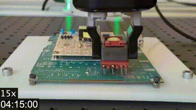
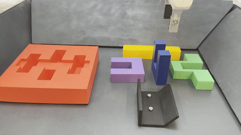
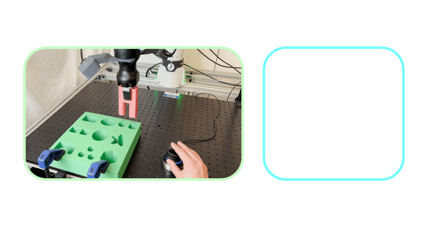
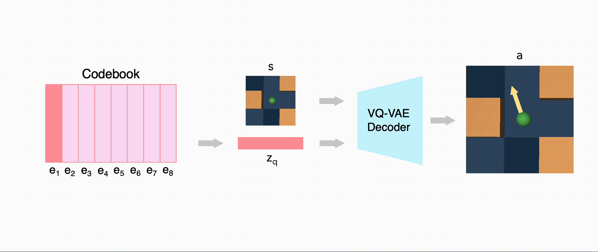
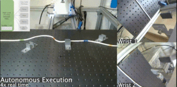
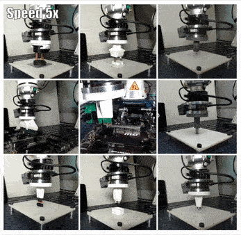
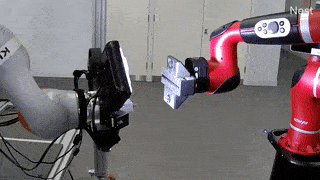
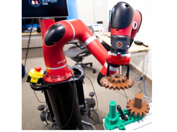

|

|
SERL: A Software Suite for Sample-Efficient Robotic Reinforcement Learning
Jianlan Luo*,
Zheyuan Hu*,
Charles Xu,
Siri Gadipudi,
Archit Sharma,
Rehaan Ahmad,
Stefan Schaal,
Chelsea Finn,
Abhishek Gupta,
Sergey Levine
Under review at ICRA 2024
Video |
Code
|
|

|
FMB: A Functional Manipulation Benchmark for Generalizable Robotic Learning
Jianlan Luo*,
Charles Xu*,
Fangchen Liu,
Liam Tan,
Zipeng Lin,
Jeffrey Wu,
Pieter Abbeel,
Sergey Levine
Under review at International Journal of Robotics Research (IJRR)
Video |
Data
|
|

|
RLIF: Interactive Imitation Learning as Reinforcement Learning
Jianlan Luo*,
Perry Dong*,
Yuexiang Zhai,
Yi Ma,
Sergey Levine
International Conference on Learning Representations (ICLR) 2024
arXiv |
Video |
Code |
Media Coverage 1,
2,
3,
4
|
|
|
Open X-Embodiment: Robotic Learning Datasets and RT-X Models
Open X-Embodiment Collaboration
Under review at ICRA 2024
arXiv |
Blog Post |
Dataset
|
|

|
Action-Quantized Offline Reinforcement Learning for Robotic Skill Learning
Jianlan Luo,
Perry Dong,
Jeffrey Wu,
Aviral Kumar,
Xinyang Geng,
Sergey Levine
Conference on Robot Learning (CoRL) 2023
arXiv |
Code
|
|

|
Multi-Stage Cable Routing through Hierarchical Imitation Learning
Jianlan Luo*,
Charles Xu*,
Xinyang Geng,
Gilbert Feng,
Kuan Fang,
Liam Tan,
Stefan Schaal,
Sergey Levine
IEEE Transactions on Robotics (T-RO) 2024
arXiv |
T-RO version |
Video |
Code |
Dataset |
Data in tfds
|
|

|
Offline Meta-Reinforcement Learning for Industrial Insertion
Tony Z. Zhao*,
Jianlan Luo*,
Oleg Sushkov,
Rugile Pevceviciute,
Nicolas Heess,
Jon Scholz,
Stefan Schaal,
Sergey Levine
International Conference on Robotics and Automation (ICRA) 2022
arXiv |
Video |
Media Coverage
|
|

|
Robust Multi-Modal Policies for Industrial Assembly via Reinforcement Learning and Demonstrations: A Large-Scale Study
Jianlan Luo*,
Oleg Sushkov*,
Rugile Pevceviciute*,
Wenzhao Lian,
Chang Su,
Mel Vecerik,
Stefan Schaal,
Jon Scholz
Robotics: Science and Systems (RSS) 2021
arXiv |
Video |
Media Coverage
|
|

|
Reinforcement Learning on Variable Impedance Controller for High-Precision Robotic Assembly
Jianlan Luo,
Eugen Solowjow,
Chengtao Wen,
Juan Aparicio Ojea,
Alice M Agogino,
Aviv Tamar,
Pieter Abbeel
International Conference on Robotics and Automation (ICRA) 2019
arXiv |
Video |
Media Coverage
|